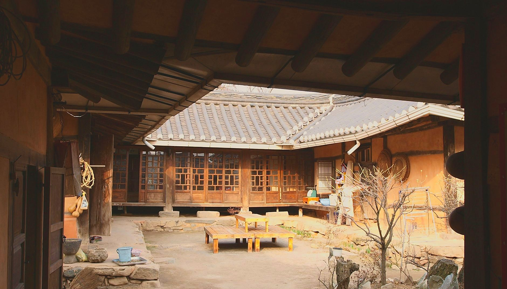
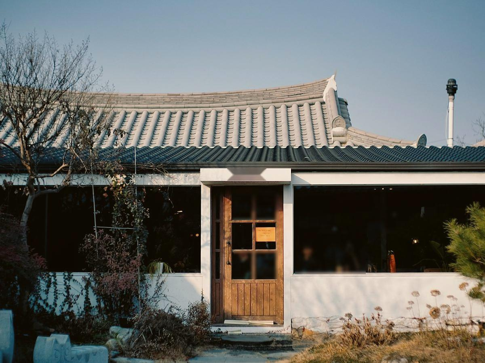
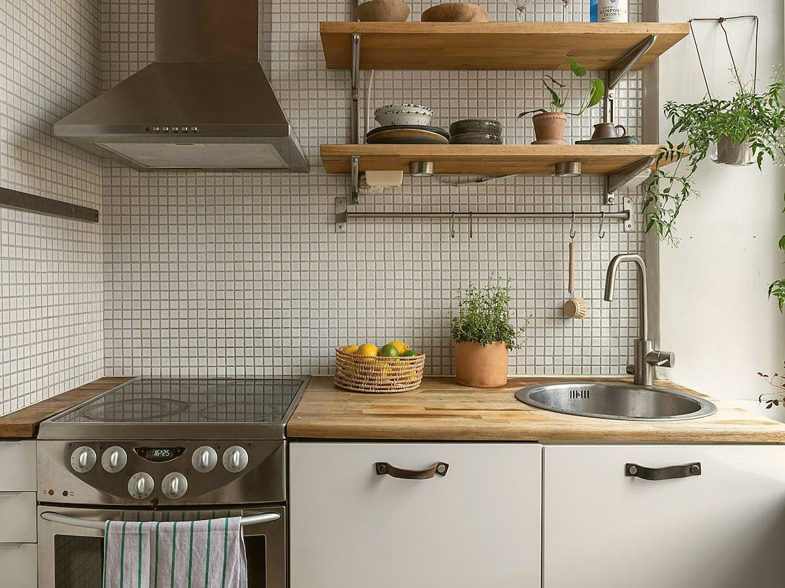
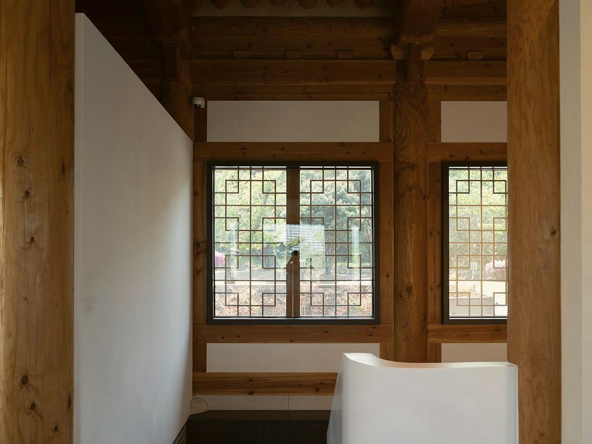

충남 홍성 · 시골집 고치기 15년
오래된 집,
오래 살 집으로
단열·창호·지붕, 재래식 부엌·화장실 입식, 기름보일러 교체. 견적은 현장에 가서 보고 드립니다.
전화 상담 010-0000-0000- 다니는 곳홍성 · 예산 · 청양 · 보령
- 현장 보기돈 받지 않습니다
- 공사 중사진을 찍어 카톡으로 보내 드립니다
고치기 전, 고친 뒤시골집에서 주로 고치는 곳
이런 상태의 집을 고칩니다. 지금 사진은 모두 무료 참고 사진이고 전과 후는 서로 다른 집입니다. 섬돌집고침이 같은 자리에서 찍은 전·후 사진으로 바꿀 자리입니다.
지붕 · 창호


재래식 부엌 → 입식


방 · 단열과 창호


사장님께 받을 것: 고친 집 3채, 같은 자리·같은 각도 전·후 사진, 면 이름 · 고친 곳 · 걸린 기간 · 손님 한마디(받은 그대로)
하는 일시골집에서 주로 고치는 다섯 가지
전기·설비는 아는 기술자분들을 불러 같이 합니다.

농가주택 리모델링
단열, 창호 교체, 지붕
재래식 부엌·화장실을 입식으로
기름보일러 교체
슬레이트 지붕 교체
슬레이트 철거는 허가받은 업체가 하고, 섬돌집고침은 새 지붕을 올립니다.
빈집 고쳐서 들어가기
귀농·귀촌하시는 분들. 빈집 사기 전에 집 상태를 같이 봐 달라는 분께도 같이 가 드립니다.
진행전화부터 마무리까지
대표와 동생, 두 사람이 다닙니다.
| 단계 | 무엇을 | 비용 | |
|---|---|---|---|
| 01 | 전화 | 집 위치와 고칠 곳을 알려 주세요. | 없음 |
| 02 | 현장 보기 | 직접 가서 봅니다. | 없음 |
| 03 | 견적 | 현장을 보고 견적을 드립니다. 견적까지 ○일 · 견적서에 적는 것 | 사장님 확인 |
| 04 | 공사 | 공사 중 사진을 찍어 카톡으로 보내 드립니다. 보통 ○주 · 추가 비용은 사진으로 보여 드리고 동의 후 진행? | 사장님 확인 |
| 05 | 마무리 · A/S | 끝나고 함께 점검 · 하자 처리 기간 | 사장님 확인 |
누가 고치나요
"공사 중에는 사진 찍어서 카톡으로 보내 드려요. 멀리 사시는 자녀분들이 좋아하십니다."박섬돌 대표 · 시골집 고치는 일 15년째
일하는 사람
대표 박섬돌과 동생, 두 사람이 다닙니다. 동생 이름
전기 · 설비
아는 기술자분들을 불러 같이 합니다.
빈집 사기 전에
"빈집 사기 전에 집 상태 같이 봐 달라는 분도 계신데, 그것도 같이 가 드립니다." — 박섬돌 대표
사업자등록번호 · 실내건축공사업 등록 여부
보험 가입 여부 · 한도
두 분 사진 (작업복, 현장) — 참고 사진으로 대신하지 않음